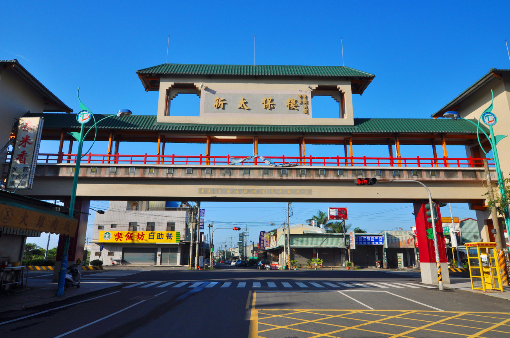

歷史文化
太保早期為嘉南平原上的農業聚落,因地勢平坦、適合耕作而逐漸發展。城市名稱有守護地方的 意涵,反映早期社會對秩序與安全的重視。隨著居民聚集,地方信仰與廟宇文化逐步形成,成為 居民日常生活與情感連結的重要核心,也為太保留下深厚的人文背景。
太保早期為嘉南平原上的農業聚落,因地勢平坦、適合耕作而逐漸發展。城市名稱有守護地方的 意涵,反映早期社會對秩序與安全的重視。隨著居民聚集,地方信仰與廟宇文化逐步形成,成為 居民日常生活與情感連結的重要核心,也為太保留下深厚的人文背景。

近年來,太保市因高鐵嘉義站設立及縣政中心進駐,城市機能快速成長,逐步轉型為嘉義縣的重 要行政與交通節點。在保有農業景觀與在地生活步調的同時,也發展出較完整的公共建設與生活 機能,呈現傳統與現代並存的城市樣貌。